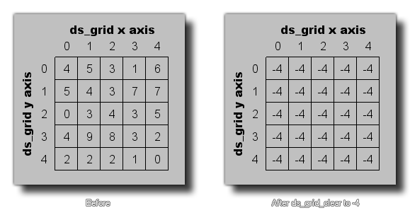

Esta función se puede utilizar para borrar un ds_grid dado a un valor específico. Todas las celdas dentro de la cuadrícula contendrán este valor, que puede ser un número real o una cadena. La imagen de abajo ilustra cómo funciona esto: 
ds_grid_clear(index, val);
| Argumento | Descripción |
|---|---|
| index | Este índice de la cuadrícula para borrar. |
| val | El nuevo valor para todas las celdas de la cuadrícula. |
N/A
ds_grid_resize(global.Grid, room_width / 32,
room_height / 32);
ds_grid_clear(global.Grid, -1)
El código anterior cambiará el tamaño de ds_grid indexado en la variable global "Grid" y luego lo borrará para que cada celda contenga el valor -1.